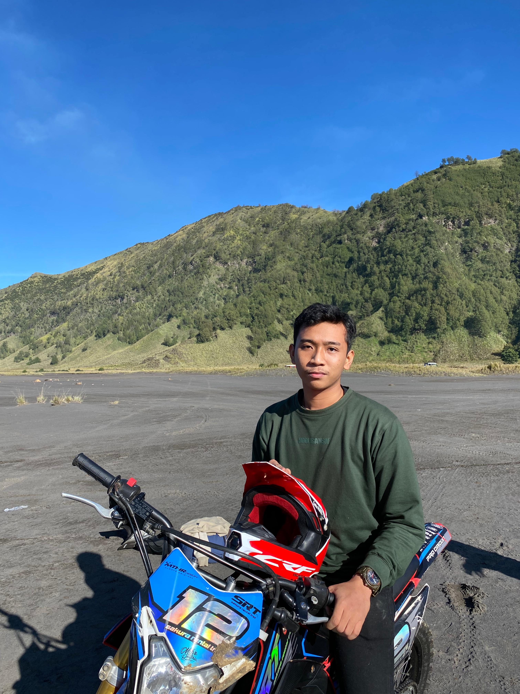

I am Abdullah Nasih Jasir, a third-year undergraduate student majoring in Informatics Engineering. I was born in the small city of Cepu, located in Central Java. My ambition is to become a data enthusiast and eventually a professional data scientist in the future.
